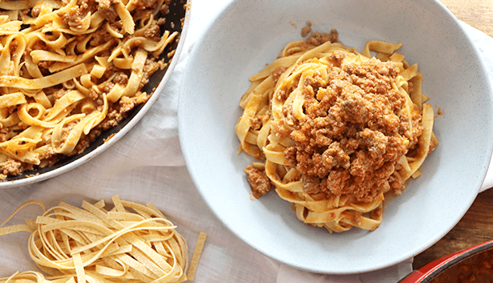
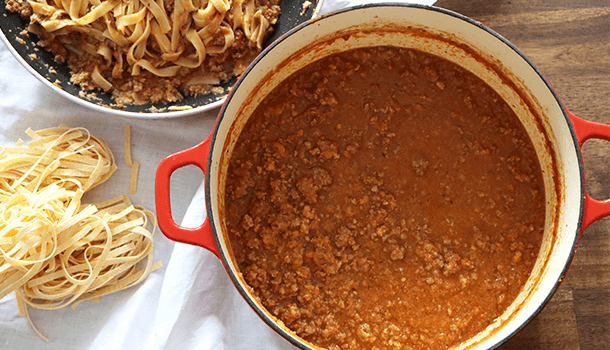

Pasta Bolognese

Home
Description
Hearty and comforting Bolognese Sauce and Pasta.
From an authentic recipe taken from Vincenzo's Plate.
This recipe is a wonderfully flavorful and complex meat sauce.
Slow cooked for hours in tomato sauce and paste.
Finally it all comes together with a splash of milk to round out all
the flavors.
This is a slow cooking recipe. The times given below are the shortest possible cooking times.
Ideally you want to simmer for 4 or more hours adding water as needed.
Ingredients
- 1 brown onion
- 1 celery stalk
- 1 carrot
- 150g/5oz pancetta
- 500g/17oz minced beef
- 200g/7oz minced pork
- 500ml/17oz tomato passata
- Extra Virgin Olive Oil
- 1 glass white wine
- 1-2 glasses of water
- Salt and pepper
- Oregano (optional)
- 1 tbsp milk
Steps
-
Bolognese sauce starts with a delicious foundation –
soffrito with a twist! Start by roughly chopping the carrot, onion and celery,
and cutting the pancetta into strips.
-
Mix all chopped up ingredients together and combine well using a hand blender.
-
Place medium-large size pot on the stove at a low-medium heat.
-
Once the pot has started to warm, add 4-5 tablespoons extra virgin olive oil (EVOO).
-
When the oil has warmed up, add the soffrito and combine with the oil using a wooden spoon.
-
Leave the soffrito to simmer for around 10 minutes.
-
Add the beef and pork mince to your Bolognese sauce mix, breaking down the chunks of meat using a wooden spoon as you cook it.
-
Next you can sprinkle a generous amount of salt along with dried oregano (or an alternate herb of your choice),
along with a glass of white wine. Be sure to cook off the alcohol from the wine.
-
Leave the Bolognese sauce to simmer for approx. minutes, stirring every so often.
This should start to bubble as the wine evaporates.
-
Now it’s time to add the bottle of passata/tomato sauce and
a sprinkle of pepper before continuing to mix once again.
-
The final ingredient is 1 x glass of water. Add this to your Bolognese sauce,
mix through and cover, leaving it to cook for 30 minutes.
-
Stir the sauce every 10 minutes so the meat cooks evenly and nothing sticks to the pan.
-
Once 30 minutes have passed, uncover and mix well using a wooden spoon.
-
At this point if there are any thick chunks of meat, break them down again using your wooden spoon before leaving the sauce to simmer once more for 30 minutes,
stirring every ten and leaving the lid off.
-
Add a tbsp of milk and stir in. Cook breifly until the milk is well integrated.
And you have sauce!

-
In the meantime, boil 5L water in a second pot and add a tablespoon of rock salt, leaving it to dissolve.
-
Once the sauce has finished cooking and your water has boiled, add your choice of pasta to the water
and cook according to the packet instructions.
-
While the pasta is boiling, prepare a large fry pan for mixing!
-
Place a frypan on the stove at a low heat, and add a generous spoonful (or two!) of Bolognese sauce, covering the base.
-
Place a frypan on the stove at a low heat, and add a generous spoonful (or two!) of Bolognese sauce, covering the base.
-
Mix this through until the pasta is completely lathered before adding another generous amount of Bolognese sauce and mixing again.
How to Serve:
Bolognese sauce pasta can be served on a plate or in a bowl – either way, you’ll likely add some extra sauce! You can also add a sprinkle of parmigiano or pecorino cheese to the top for some added salty goodness.